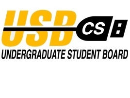
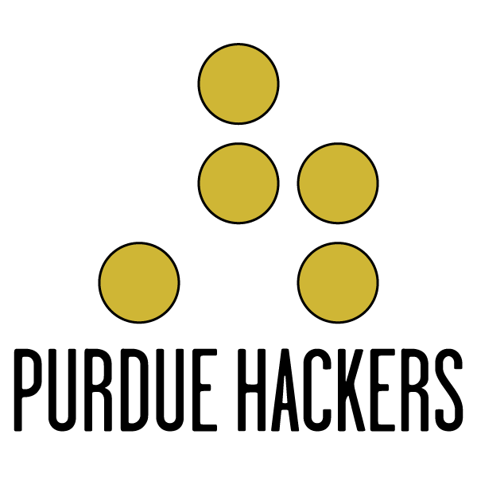
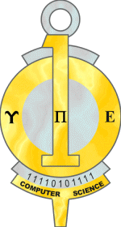
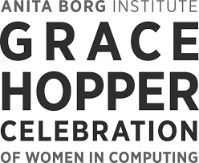
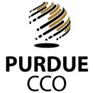

Other Student Organizations
-

Undergraduate Student Board
The USB is a group made up of a maximum of twelve undergraduates in the Department of Computer Science who are determined to make Purdue a better place to study and obtain a degree.
-

Association for Computing Machinery
ACM at Purdue is an organization for connecting students, faculty and companies for the betterment of the computing community. As a representative of one the world's most influential computing organizations, they provide academic resources, forums for the spreading of ideas, and communities for technological discovery and growth.
-

Purdue Hackers
Purdue Hackers is a community of students devoted to the idea that Purdue needs to embrace the kind of "hacker culture" that's found in places like Silicon Valley, Seattle, and Austin. Their mission is to bring that culture here by hosting events where hackers can meet and learn from one another.
-

Upsilon Pi Epsilon
Upsilon Pi Epsilon is an honor society which was founded in 1967 to recognize scholarship and professionalism in the Computing Sciences. In the 48 years since then, over 120 institutions of higher education around the world have established UPE chapters.
Women's Interest Groups
-

Women in Science Programs (WISP) at Purdue
WISP is composed of four components: Residential Program, Tutoring Program, Undergraduate Mentoring Program, Graduate Mentoring Program. These four components work together to form a continuous environment that fosters success for students in the College of Science at Purdue University from freshman year through Ph.D.
-
Systers
Systers is a forum for all women involved in the technical aspects of computing. The community has over 6,000 members from at least 60 countries around the world.
-

Anita Borg Institute for Women and Technology
A global institute that supports women in technology through many different venues such as the Systers organization and the Grace Hopper Conference.
-

Grace Hopper Celebration of Women in Computing
The Grace Hopper Celebration of Women in Computing is the World's Largest Gathering of Women Technologists. It is produced by the Anita Borg Institute and presented in partnership with ACM.
Purdue & CS References
-

Center for Career Opportunities (CCO)
Purdue's resource for interviews, resume reviews, and help with your job search during school and after graduation.
-
CS Scholarships
Location to learn about and apply for scholarships for Purdue Computer Science students.
-
Opportunity Update
Has information for all the current events happening for the Purdue CS Department, such as job openings, club meetings and callouts, and company recruitment days.
-
Undergraduate Research Opportunities
A website to help undergraduates find research opportunities. This is very helpful for students looking to go to graduate school.
-
Index of Graduate Schools
A comprehensive list of all the graduate schools in the United States.